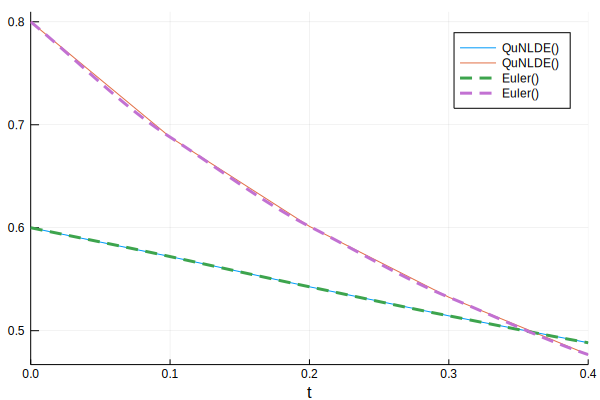
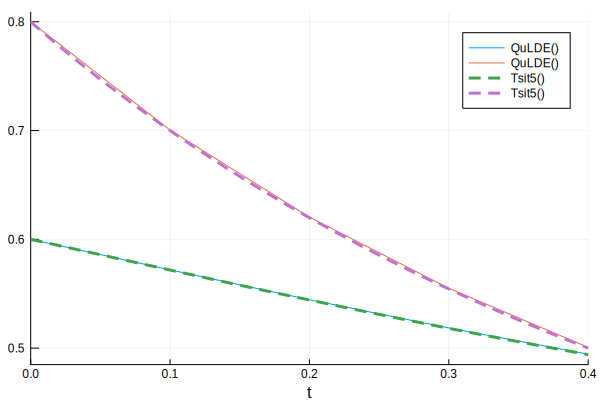

Non-linear Differential Equations
The problem at hand is a set of differential equations. For simplicity, we consider a two variable set.
QuDiffEq has two algorithms for solving non-linear differential equations.
QuNLDE
Uses function transformation and the forward Euler method. (quadratic differential equations only)
The algorithm makes use of two sub-routines :
A function transformation routine - this is a mapping from $z = (x,y)$ to a polynomial, $P(z)$ . The function transformation is done using a Hamiltonian simulation. The Taylor Truncation method is used here.
A differential equations solver - Forward Euler is used for this purpose. We make use of the mapping, $z \rightarrow z + hf(z)$
The functions $f_i$ being quadratic can be expressed as a sum of monomials with coefficients $\alpha_i ^{kl}$.
$z_0$is equal to 1. To begin, we encode the vector z , after normalising it, in a state
with $|z\rangle = \sum z_k |k\rangle$
The tensor product, $|\phi\rangle|\phi\rangle$ gives us the a set of all possible monomials in a quadratic equation.
What's required now is an operator that assigns corresponding coefficients to each monomial. We define an operator $A$,
$a_0^{kl} = 1$ , for $k=l=0$ , and is zero otherwise. $A$ acting on $|\phi\rangle|\phi\rangle$ gives us the desired result
For efficient simulation, the mapping has to be sparse in nature. In general, the functions $f_i$will not be measure preserving i.e. they do not preserve the norm of their arguments. In that case, the operator needs to be adjusted by appropriately multiplying its elements by ||z|| or ||z||^2.
To actually carry out the simulation, we need to build a hermitian operator containing $A$. A well-known trick is to write the hamiltonian $H =−iA\otimes|1⟩⟨0|+iA^† ⊗|0⟩⟨1|$ (this is von Neumann measurement prescription). is simulated (using Taylor Truncation method). The resulting state is post-selected $|1\rangle$ on to precisely get the what we are looking for.
QuLDE
Linearises the differential equation at every iteration.
The system is linearised about the point $(x^{*},y^{*})$. We obtain the equation,
with
where $\Delta u$ is naturally zero. We then have, $\Delta u_{new} = (e^{Jt} - I)J^{-1}b$. This equation is simulated with quldecircuit.
Usage
Let's say we want to solve the following set of differential equations.
Let's take the time interval to be from 0.0 to 0.4. We define the in initial vector randomly.
using QuDiffEq
using OrdinaryDiffEq
using LinearAlgebra
tspan = (0.0,0.4)
x = [0.6, 0.8]- For
QuNLDE, we need to define a<: QuODEProblem. At present, we use onlyQuLDEProblemas a Qu problem wrapper.QuNLDEcan solve only quadratic differential equations.Ais the coefficient matrix for the quadratic differential equation.
N = 2 # size of the input vector
siz = nextpow(2, N + 1)
A = zeros(ComplexF32,2^(siz),2^(siz));
A[1,1] = ComplexF32(1);
A[5,3] = ComplexF32(1);
A[5,6] = ComplexF32(-3);
A[9,11] = ComplexF32(-1);
A[9,7] = ComplexF32(-1);qprob = QuLDEProblem(A,x,tspan);To solve the problem we use solve()
res = solve(qprob,QuNLDE(), dt = 0.1);Comparing the result with Euler()
function f(du,u,p,t)
du[1] = -3*u[1]^2 + u[2]
du[2] = -u[2]^2 - u[1]*u[2]
end
prob = ODEProblem(f, x, tspan)
sol = solve(prob, Euler(), dt = 0.1, adaptive = false)
using Plots;
plot(sol.t,real.(res),lw = 1,label="QuNLDE()")
plot!(sol,lw = 3, ls=:dash,label="Euler()")
- For
QuLDE, the problem is defined as aODEProblem, similar to that in OrdinaryDiffEq.jl .fis the differential equation written symbolically. We can use prob from the previous case itself.
res = solve(prob,QuLDE(),dt = 0.1)sol = solve(prob, Tsit5(), dt = 0.1, adaptive = false)
using Plots
plot(sol.t,real.(res),lw = 1,label="QuNLDE()")
plot!(sol,lw = 3, ls=:dash,label="Tsit5()")